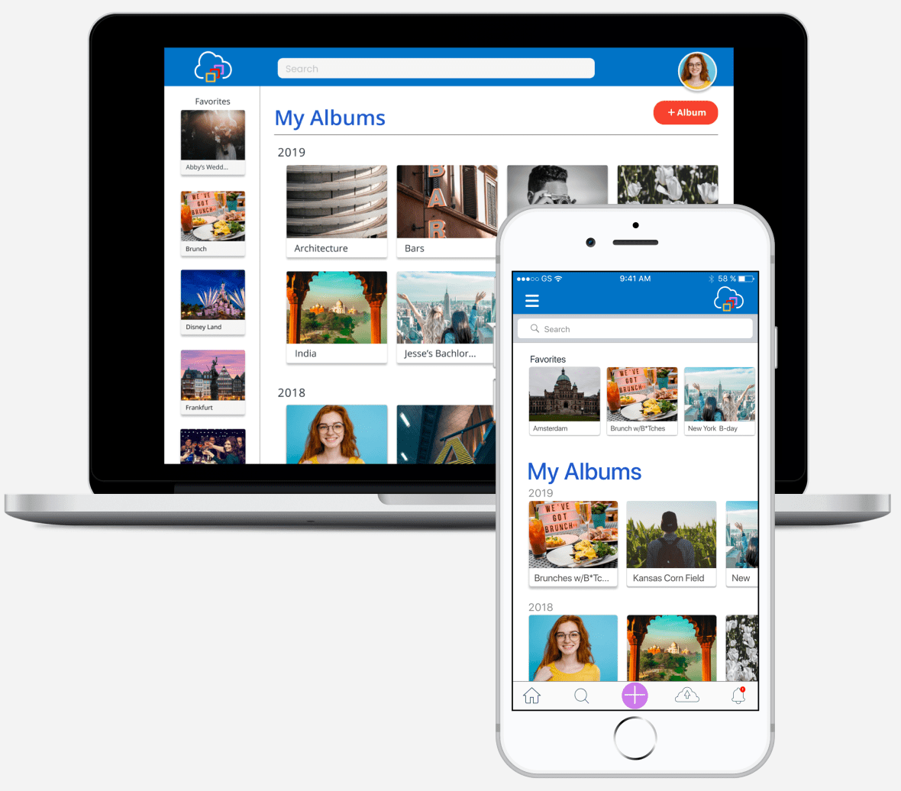
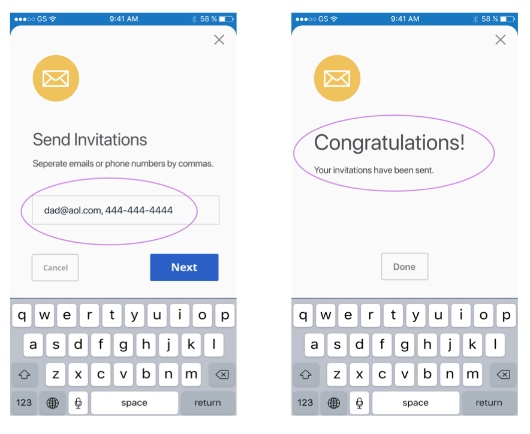
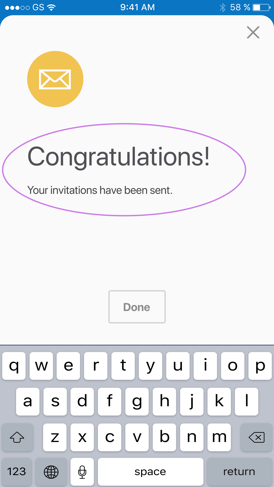
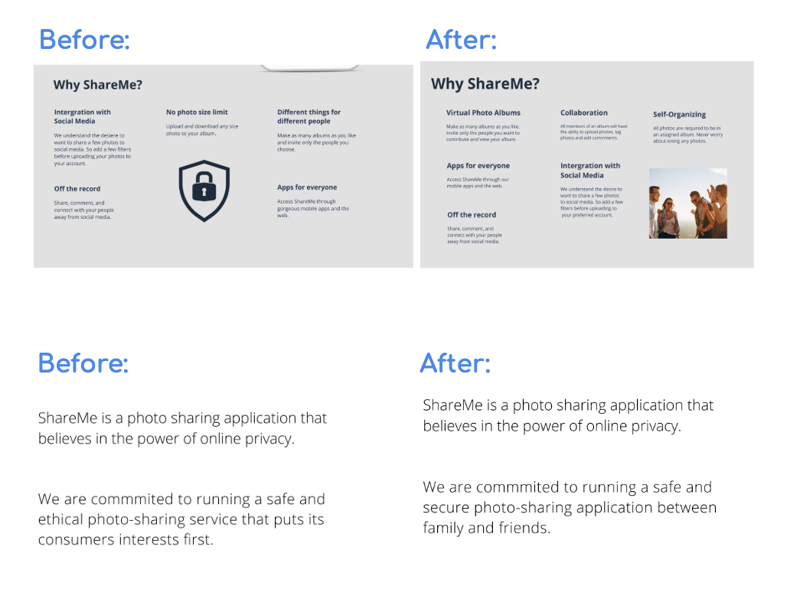
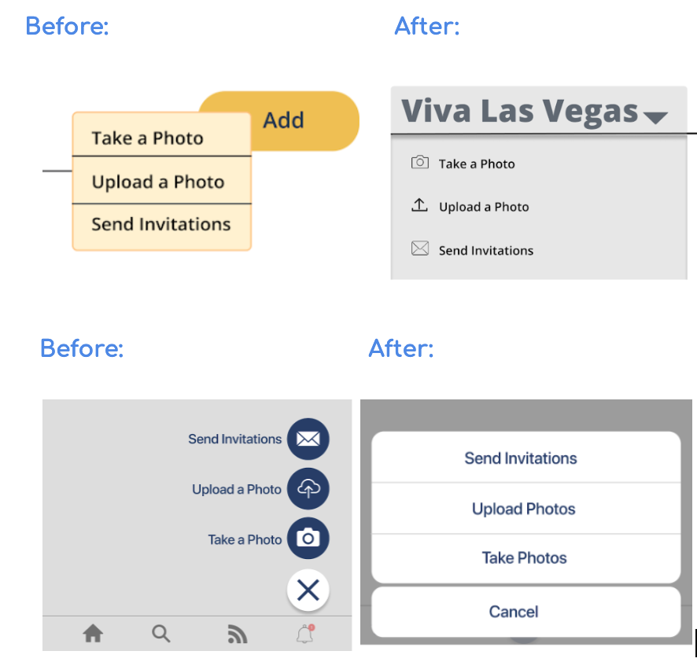

ShareMe is SaaS (software as a service storage) photo-sharing application that prides
itself on privacy while sharing photo albums between friends and family.

Summary
Why ShareMe?
.......
Cloud storage applications is a growing market that people are increasingly reliant on it for both personal and professional use. In 2019 an
estimated 3.6 billion people worldwide used cloud storage, up from 1.8 billion people in 2017. With so many cloud storage users, there is an
opportunity for a new, updated product to enter the market that resolves frustrations current users experience.
ShareMe seeks to do this by improving discoverability and giving users the ability to gather all of their photos one, easy-to-use interface.
View Desktop Prototype
View iOS Prototype
DESIGN ROLES
- UX Researcher
- Content Strategist
- Visual Designer
- Branding Desiger
- UX Designer
-
DELIVERABLES
- Competitive analysis
- Survey results
- User personas
- Branding
- Sitemap
- Wireframes
- Prototypes
-
TOOLS USED
- Figma
- Balsamiq
- Maze
- UsabilityHub
- InVision
The Problem
What Problems am I Solving for?
.......
For this project, I was tasked with building a cloud storage brand and app that stood out in the
saturated market. The client did not have a specific vision in mind and was reliant on me to discover
the problems that existed for current users which the competition had yet to address. The research
I conducted allowed me to see a pattern of frustrations users experienced when using their cloud storage app of choice:
The Solution
Simplicity & Increased Functionality
.......
ShareMe is a cloud storage app that allows you to share private albums with friends and family.
Staying organized with our intuitive album system. Always connected with timely alerts and notifications.
Share private albums where invitees can collaborate by uploading photos, adding comments and tagging other users.
- Organization with our album system
- Timely alerts and notifications
- Upload photos from anywhere
- Take real-time photos
- Collaborate by adding comments and tagging other users
- Invitees can also upload and take photos real-time
Competitive analysis
Learning From Existing Solutions
.......
To discover how to best position ShareMe in the saturated market,
I needed to first understand the strengths and weakness of the competitors
that already existed in the space. After doing some research and determining
Google Photo, Evernote, and Pinterest were three of the most popular, I decided to use them to conduct my competitive analysis.

Pro
Appeals to all interests. Pictures are visually appealing. Serves many functions (buying, selling, networking, etc.).
Easy to share information.
Con
Not monitored - can be false information. Geared towards females. No able to create own private photos.

Pro
Great for personal use with strong collaboration features. Major competitor that intergrates with their umbrella of products.
Con
Large corporation that people are trusting less and less.

Pro
Great intergration options and colloboration/presentation features.
Con
Large corporation with limited free storage.
View Analysis
User research
Clarifying Users' Expectations & Frustrations
.......
I knew going into this project I had to find a niche product. I had to create a product that would bring
value to the end customer and solve a problem. And while the market is full of cloud storage applications that
share links, workbooks, etc - I wanted to create a hybrid of a cloud storage application and social media.
My idea was to create a photo-sharing cloud storage
application that users can upload photos to one album, tag and add comments with an emphasis on privacy.
Going into my user survey, and understanding of the strengths and weaknesses of already established companies I was able
to craft a survey that would help create a flawless product.
Users Who Use Photo Sharing Apps
82.8%
use a photo sharing app.
83.3%
use their phones for most of their photo sharing.
95.8%
use Social Media as their main source to share photos.
58%
wish their app would include ways to better sort thru photos.
Users Who Don't Use Photo Sharing Apps
80%
don't use an app because of the main issue of 'Privacy.'
60%
find the cost of storage to be the biggest pain.
40%
feel the cost of storage, privacy, and photo editing are the most important featues when picking a photo sharing app.
View Survey
What I learned from the research
Based on these results I started to understand my user and what is needed for my
product to be successful. I know my app would need to emphasize privacy, cost effective storage,
integration with other applications, and collaboration. Now I had to marry my research, idea and the client brief.
User personas
Bringing Users to Life
.......
With the information gained from my competitive analysis and my user surveys I was ready to create my user personas,
hypothetical archetypes of real users as defined by their goals and frustrations. Building personas would allow me to
summarize the patterns I noticed and give them life in the form of fictional users.
Tessa
Buyer, 26 years old
Goals
- Become more organized with her photos.
- Share her experiences privately.
Frustrations
- Different people are using different apps so their is lack of organization.
- Cannot rely on other people to share their photos.

Thom
IT Manager, 35 years old
Goals
- Trust an app that allows him to share photos with family/friends.
- Share photos easily with non-technical people.
Frustrations
- Lack of centralization because everyone he knows is using a different app.
- Not being able to rely on people to send photos to him after events.
View Personas
User stories & flows
Seeing it in the Context of the User
.......
Keeping the user personas in mind, I created user stories which laid out the highest, medium and lowest priority tasks for users. I focused on the highest and medium priority tasks to create my medium viable product (MVP) which I then
mapped out using user flows.
Flow for the user story: "I want to be able create a new account or sign in."
View User Stories
View User Flow
Low fidelity wireframes
Building the Skeletal Structure
.......
Building on the sitemap and user flows, I sketched the main screen of the MVP tasks. Next, I visualized each screen and each interaction necessary to complete the task, I created a clickable low-fidelity prototype in Figma.

v2. I keep the same concept but I simplified the buttons to only one, where the client could click on the album and use the features as laid out in v1.
I also included my mobile, since 80% of my users used mobile to send photos to friends/family. I incorporated a floating button on the mobile, but that will later be taken out based on my user tests.
View Lo-Fi Clickable Prototype
Clickable Prototype
First Round of Usablity Testing
.......
I created my prototypes based on my v2 wireframes. I then conducted my usability testing. My results are below that I later incorporated into my final design.
- Created confirmation modal after the emails are sent so user doesn't send more than one.
- Slight confusion on the invitations and red circle. The user would click on the avatar rather than the circle.
- Learned that the user should also have the option of uploading photos by not just the big button on the bottom, but also allowing the user to click on album directly.
- Update the product page to give clarification what ShareMe does and can do for its users. There was some confusion on what it did and the problem it solved.
- Add ability to add text messages when sending invitation to family/friends.


Brand logo
Creating a Brand Identity
.......
As I began to brainstorm through word association and sketching exercises, “Sharing intimate memories with people that matter” became a mission statement for my product. I chose “ShareMe” to reflect this.

Color Palette
Evoking the Right Emotions
.......
Taken from our color guide: “Our color palette is built to support our voice as the leading photo cloud storage applications with our commitment to our clients, built on trust and privacy.”

Typography
Keeping the Design Systematic
.......
Primary Type - Nunito is a well balanced sans-serif with rounded terminals. This blends well with the rounded shapes of our logomark and brings balance. Nunito is used for headings only.
Secondary Type - Open Sans is a clean and modern sans-serif typeface. We continue to choose a rounded typeface with our rounded theme. Open Sans is used for body elements and labels.
Primary-iOS
High fidelity prototype
Layering on the Skin
.......
Keeping in mind my branding, it was time to put the skin on my wireframes and make them fully come to life.
View Style Guide
User Testing
Prefernce Testing
.......
In this phase, I also did a preference testing along with user testing. Preference testing helped me to choose between design variations, by simply asking users which one they prefer. My results:
- Alerts Icon:
Bell (winner) vs text box for notification in table bar
60% of the participants thought the bell was the most appropriate option based on their experiences with other apps who also use the bell icon. Here is some feedback I received and were echoed with about 4 more participants. I will be adding a +1 on the bell for a complete notification experience.
“I associate the bell icon more with notifications than the text box, which i associate most with messages…”

- Color of album labels
White (winner) vs Blue
This was a landslide with the white labels being the winner at 65%. Which was great since I prefered both colors, but the participants thought the white was more inline with the iOS style “cleaner on the eyes,” and “Its lighter and cleaner.”

- Add new album button
Yellow vs Blue (Winner)
This was blue button won at 59% for many reasons according to the participants …”this (blue)button is easier to see in terms of contrast, users with vision impairments might have some trouble with the yellow button” - “matches color scheme” and “its in the same
Family”

User Testing
Second Usabilty Test
.......
In this phase, I also did a preference testing along with user testing. Preference testing helped me to choose between design variations, by simply asking users which one they prefer. My results:
- Website wasn’t clear, needed to do another round of changes to content, and spacing.

- Updated the modal to a dropdown in album desktop view and the modals:

- 3. Incorporated all of these design changes into my iOS prototype, including taking out the ‘+’ button on the mobile to create a more cohesive experience for the user. Because as I was watching the user in the user feedback, they were confused why it was there and said they would a play around with it, but it wasn’t necessary.

In Conclusion
What I Learned
.......
This was my first full design project and it was an incredible learning experience. These are the biggest lessons I learned:
- ShareMe taught me the importance of testing throughout this design process. Testing allowed for quick iteration and discovery of unidentified problems which resulted in a far more improved final product and inspired a more informed solution between my mobile and desktop experience.
- Data is always right. I loved how data was and is a huge part of the design process. Data guided me to create a product for the consumer that was streamless and intuitive. The data disqualified my assumptions, which was such an awesome experience.
- As part of my research, I wish I would have studied the layout and navigation structure of several cloud platforms - while validating design decisions through several rounds of user-testing. I am very new to UX, so it would have been beneficial as I built out my platforms from the sketches to the final clickable prototype.
- Know when to stop. I could keep testing and updating and testing and updating. I feel like this process is never really done. I could continue to grow my skill set, create a more seamless experience, but I have to remember the MVP and know that I could make updates to the product once its published.
Next Steps
.......
If given more time, I would test my features of the dashboard. Based on my initial survey results, my original design was for an iOS app, so my main focus was to build out my iOs app. But to ensure an inclusive experience, understanding the hierarchy and spacing of a polished dashboard would have saved me a lot of time upfront.
Desktop Prototype
iOS Protoype